RACE：以排序不确定性分配序列推荐的模型容量与历史长度
论文链接：arXiv:2611.18244
作者：Tianqi Liu、Kaipu Sun、Kairui Fu、Wenkai Wang、Sihao Liu、Hui Zang、Ran Chen、Tao Wang、Shengyu Zhang。第一作者机构为浙江大学，合作机构包括华为。首次提交为 2026 年 11 月 13 日；本笔记记录于 2026 年 11 月 16 日。arXiv 作者备注为 WSDM 2027 主会接收，PDF 已带会议排版与 DOI；独立会议接收名单未在本轮复核。原文未给出可核验的独立代码仓库，不能据此称代码已开源。
RACE 将推荐压缩从统一删通道、统一截历史，改成由实例自己的排序稳定性决定计算投入。它对四个公开数据集、两个小型序列骨干做了离线验证，并补充四核 CPU 的五十候选重排测量；其证据范围尚未延伸到真实手机在线流量。
统一压缩比例忽略不同用户意图的复杂程度：简单实例可能浪费计算，而复杂实例又可能被削去必要容量。RACE 要同时调整模型结构和输入序列，并在推理早期预测应当保留多少计算。
1. 背景和问题
序列推荐把用户按时间发生的物品交互作为输入，预测下一次交互。Transformer 可以在历史物品之间建模依赖，但在端侧或严格延迟预算下，训练出一个更大的模型不意味着可以把同样完整的计算分配给所有请求。本文出发点是移动设备上的实时推荐与重排：云侧已经提供候选和基础模型，本地需要利用新近行为及时更新判断，同时避免不断上传新数据、等待云侧往返和进行昂贵的设备端反向传播。这个场景强调可用预算与用户兴趣变化，和只比较服务器上离线模型准确率的研究目标不同。不过作者的具体实验是在公开数据与 CPU 上模拟本地流程，背景动机并不等于实机部署证明。
以往处理容量限制有两条直接路线。第一条是微调，让一个共享骨干针对某个用户的新数据再学习。它能够更新参数，但需要反向传播和多个优化步骤，兴趣变化越快，更新越容易落后于请求。第二条是裁剪，在训练前后选择连接或通道，或者在推理中删掉部分历史 token。它可以减少矩阵计算，却容易把压缩比例视为固定超参数。即使裁剪掩码因用户而异，若所有实例都必须删掉同样比例的通道，资源总量仍然相同。作者把这个问题称为容量与复杂度不匹配：模型可能已经足以处理稳定、清晰的兴趣，却必须对同类易例反复运行冗余层内计算；多兴趣或刚发生偏移的难例反而没有额外容量可用。
这里有两个需要拆开的决定。一个是“保留多少”：保留的通道数、保留的历史长度共同决定后续计算规模。另一个是“具体保留谁”：同样保留两成通道，哪些通道对当前用户重要；同样剩下若干物品，哪些交互仍支持当前目标。RACE 把前者交给轻量预算预测器，把后者分成通道敏感度评分与注意力重要性评分。两者结合才形成完整的自适应过程。若只有重要性排序而没有实例预算，模型只是个性化选子网；若只有预算而随机删通道和历史，则无法保证剩下的容量承载了有用信息。这也解释了后文为什么要同时检查动态比例、通道识别和序列过滤三个消融。
困难在于实例复杂度没有直接标签。历史长并不总是难，重复购买或稳定的内容偏好可以产生很长却清楚的序列；短历史也可能混入多种意图。热门度和兴趣稳定性容易从输入计算，因此常被设想为成本较低的代理，但它们未必对应当前骨干实际预测得好不好。本文先用模型表现检验两个启发式，而不是直接把它们定义成难度真值。更深一层，用户复杂度与模型复杂度也不能混为一谈：某个用户在一个模型中不确定，不意味着换成另一特征集、训练日期或候选集合仍然不确定。RACE 使用的是当前模型给出的内部排序信心，准确说是“模型条件下的请求难度”。
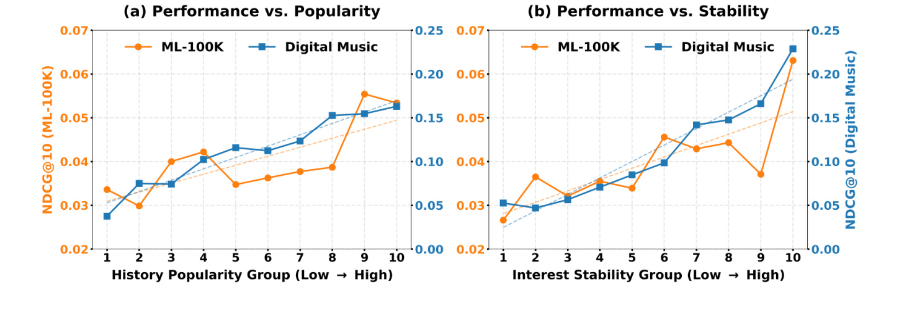
Figure 2 的左图按历史热门度把样本分组，右图按兴趣稳定性分组，横轴从低组走到高组；两条曲线分别对应 MovieLens-100k 和 Digital Music 的推荐性能，左右坐标尺度不同。作者关注的是这些廉价输入特征是否能稳定、清楚地预测实例难度，图中不同区间的变化并不能提供一个跨数据集直接通用的分配规则。尤其不能把一条总体上升趋势直接翻译成“热门用户都应少算”，因为这里观察的是群体平均性能，没有比较每个样本在不同预算下的反事实质量变化。Figure 2 因而支持重新寻找模型内部信号的动机，却没有证明输入侧启发式完全没有价值。图中的 Digital Music 名称与主实验使用的 Amazon-CD 并不完全同名，本笔记保留原图称谓，不擅自认定它们是同一数据划分。对复现者而言，图的意义是提醒先检查代理与任务质量的关系，再决定预算方向；不能拿它代替真实业务数据上的难度校准，也不能只根据视觉印象推断相关性的显著性。
作者选择把不确定性放到 Top-K 排序结构上。推荐系统关注若干物品的相对次序，单个分数的方差或整个输出的熵不能完整表达列表是否稳定。两个候选的均值很近时，即使各自方差并不大，次序仍可能交换；若均值相隔很远，较大的绝对方差也不一定改变前列排序。这使“分数是否可靠”和“前列列表是否可靠”成为两个不同问题。RACE 用预测均值与方差共同计算成对超越概率，再聚合为列表不确定性。其目标不是在服务时增加多个完整模型来投票，而是把这个事后指标转化成训练信号，让早期特征能提前预估应该投入的资源。
还有一个容易忽略的前提：请求不确定性的估计也必须付出计算。如果依赖多次完整随机前向，省下的通道或历史计算很可能被估计器抵消；若额外用户编码器本身很重，找到小子网也未必比直接跑原骨干快。RACE 因而将单次贝叶斯输出、早期预测和内在特征复用连在一起，这些都是为保持控制收益为正而设计的约束。只移植列表指标而忽视估计与执行成本，就没有复现完整问题设定。
因此，对本文最合适的期待是一个可复用的分配机制，而不是一个关于所有推荐任务的普遍难度公式。实验中的最大序列长度只有二十、嵌入维度六十四、四个 Transformer block，实际压缩对象是这个有限上下文里的计算冗余。它不同于千级历史的长期兴趣压缩，也没有直接改写候选召回、物品语义编码或列表业务价值函数。对工业链路的启发应落在“先预测请求难度，再选择容量和输入”的控制接口上；是否适合更长历史、多目标精排或生成式检索，需要另做同预算、同样本和真实延迟测量。
2. 方法
2.1 排序不确定性引导的资源分配
论文把每个用户的策略写成通道剪枝比例、序列剪枝比例、通道掩码和保留物品集合的组合，在计算约束下最大化推荐效果。这里允许不同请求采用不同的保留规模，但最终要返回同一下一物品推荐任务的结果。策略的输出不是一个新的推荐目标，也不负责生成云端候选；它改变的是现有骨干处理历史时的有效网络和有效输入。这个边界使后面的精度比较仍然可以使用同一物品集合与排名指标：
符号解释：用户集合为 $\mathcal U$，$S_u$ 是用户历史，$M$ 是基础模型，$\pi_u=\{\tau_u,\tau'_u,m_u,k_u\}$ 是实例自定义策略，$R$ 表示应用策略后的推荐表现，$C$ 是计算量，$C_{\max}$ 为预算上限。这是问题定义而不是一个已经精确求解的离散优化算法；后续阈值预测、掩码生成和历史筛选是其可训练实现。
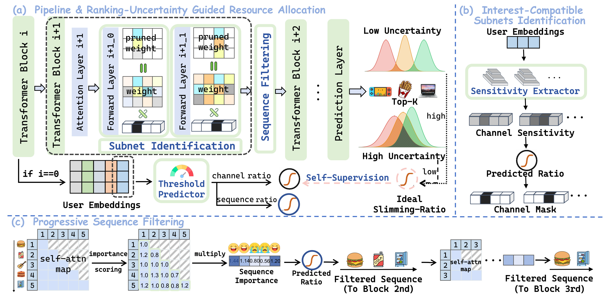
Figure 3 左上从历史序列进入骨干，第一块的最后一个有效 token 表示被复用为用户状态，送入阈值预测器，输出通道和序列两种比例；下游各层按这两个预算缩减计算。右侧通道支路用用户状态产生各 FFN 通道敏感度，再按比例形成硬掩码，图中被涂成“pruned”的权重不会在推理路径继续承担原有计算。下方历史支路从每层 self-attention map 读取重要性，乘上位置因子并累积后筛选物品，下一层在已经缩短的序列上继续工作。左侧底部的理想比例与最终预测层相连，只在训练中提供自监督目标；推理时不能先完整跑到末层再回来决定该次请求前面该删多少，否则就失去早决策节省计算的意义。图中共享的是骨干已有的中间表征，而非额外训练一个独立的大型兴趣编码器，因此“复用”主要减少辅助开销。与此同时，通道选择和 token 过滤仍有计算与调度成本，不能因为示意图简洁就把它们视作零开销。预算在第一层之后预测，因此第一层的完整编码开销仍然保留，不能把所有层都算成同样的压缩比例。三个子图表达的是不同粒度的控制：早期比例决定预算，当前层用户状态决定通道排序，当前层注意力决定历史排序。后文的硬裁剪与软训练差异也必须沿着这三路分别理解。
为得到单次前向的预测均值与方差，作者在输出头采用变分贝叶斯最后一层，权重建模为高斯分布。对不同输出维度采用对角参数化，给定输入后各物品 logit 被作为条件独立的高斯变量。于是任意两物品的差仍为高斯，成对超越概率可解析计算：
符号解释：$\mu_i$、$\sigma_i^2$ 分别是物品 $i$ 的预测均值和方差，$\Phi$ 为标准正态累计分布函数，$k_i$ 是按均值排序的第 $i$ 个物品，$K$ 是计算列表不确定性的深度。实验令 $K=20$，大于评估截断五，以覆盖更宽的候选排序结构。均值差大、方差小会使超越概率接近一，聚合损失接近零；分数靠近或方差增大则使排序更模糊。独立输出高斯假设给出了成对概率的解析形式，但所有成对比较彼此并不独立，因为它们共享候选分数。因此这项负对数和更稳妥地理解为排序稳定性的聚合代理，而不能额外宣称它已经是整张排列发生概率的精确负对数。
最终不确定性只在完整输出后可得，作者用早期最后有效物品的向量 $c$ 预测比例，并用当前 mini-batch 的不确定性均值和标准差生成伪标签：
符号解释：$g_\phi$ 为两层轻量 MLP，$\tau$ 为预测的通道剪枝比例，$\tau^*$ 为停止梯度的目标比例，$r_0$ 指定比例分布中心，$\epsilon$ 防止除零，$\mathcal D$ 是训练分布。负号非常重要：高不确定性对应较小剪枝比例，从而保留更多容量。序列比例 $\tau'$ 由通道比例线性变换得到。它学的是本批相对难度与目标预算的对应，并没有外部“真实难度”标签；训练批组成、输出校准和分布变化都可能影响学到的分配。推理时使用 MLP，避免重新执行完整贝叶斯排序不确定性计算后再做预算决定。
2.2 兴趣相容的 FFN 子网识别
预算给出数量后，还需找到对当前兴趣有用的通道。每层取最后有效 token 的隐状态作为动态用户向量，再经一层投影和 sigmoid 形成 FFN 通道敏感度；通过该层分数的分位点截断，形成实例相关的子网络：
符号解释：$l$ 为层编号，$c^{(l)}$ 是该层用户向量，$W_s,b_s$ 是可学习参数，$s^{(l)}$ 是各 FFN 通道分数，$\delta_\tau$ 为分数的 $\tau$ 分位点，$m_i^{(l)}$ 是保留掩码。这里 $\tau$ 是删除比例，不是保留比例，默认零点八约意味着删除八成通道。训练用 STE 让硬掩码的前向决策与连续分数的梯度连接起来，敏感度模块因而能随推荐目标学习；推理使用硬子网跳过被删通道。相同预算下，不同用户的通道集合可以不同，而同一用户不同层的状态也可能产生不同选择。
这种设计沿用现有骨干的表示，和先额外编码用户再给每个层分配网络的路线相比，辅助代价较小。需要注意敏感度是学习得到的贡献估计，并非逐通道进行反事实删除测得的真实因果效应；选择结果受骨干状态、掩码梯度近似和稀疏正则共同影响。若在实际内核里只是把通道乘零、仍然执行完整稠密 GEMM，则逻辑稀疏未必减少时间。论文报告的 CPU 延迟是存在实际收益的证据，但迁移到不同并行硬件仍应验证不规则实例子网怎样批处理，而不能把参数掩码比例直接换算成同等服务加速。
2.3 逐层历史过滤及联合训练
通道压缩减少层内网络计算，历史过滤进一步减少后续层处理的物品数。作者从多头平均的因果注意力读取每个历史物品接收的后续关注，用查询位置权重纠正不同位置可见范围的差异，再以累积乘积衡量一致重要性：
符号解释：$\overline A^{(l)}$ 是层内多头平均注意力，$t$ 是待评估历史位置，$j$ 是能够看见它的后续查询位置，$T$ 是当前长度，$\eta(j)$ 线性加权较后查询，$s_t$ 为归一化重要性。累积乘积要求一个物品持续对后续兴趣有贡献，而不是仅在少数位置取得高值。这个定义不同于简单列均值，也有数值与长度依赖：很长乘积可能下溢，当前论文短序列实验不能说明它在千级历史上仍然稳定。乘积同样是启发式重要性设计，不能自动解释成用户相关性的概率。
符号解释：$S^{(l)}$ 为当前层物品集合，$\tau'$ 是逐层序列剪枝比例，$n_l^{\rm keep}$ 是下一层保留数，$\operatorname{TopK}$ 按重要性选择对应物品。它是逐层压缩，后面的层只处理前层留下的内容，因此早期丢掉的行为不会在后面自动恢复。训练时用 soft masking 保持 batch 形状稳定，推理才真正移除未选 token 获得 FLOPs 减少。需要同时考虑训练和服务对有效末位表示、位置编码、因果掩码及历史顺序的处理，不能只移走向量而保留不匹配的索引。
符号解释：$\mathcal L_{\rm rec}$ 包含推荐交叉熵及贝叶斯推断 KL 项，$\rho$ 为平均通道剪枝比例，$r_{\rm target}$ 为目标平均稀疏度，两个 $\lambda$ 分别平衡稀疏约束和阈值预测。默认系数为一与零点五。训练不只是学一个更小模型，还同时学习质量、平均预算以及按实例分配的对应；服务无需再做设备端反向传播。原文对贝叶斯损失内部展开和序列比例线性映射没有提供足够实现细节，本笔记不补造未给出的超参数或算法。这个目标控制的是平均稀疏度，若业务要求严格逐请求计算上限，还要在控制器之外显式执行上限截断。
3. 实验结果
3.1 四个数据集和两个骨干的主结果
作者使用 MovieLens-100k、Douban、Amazon-CD、Amazon-Game，做十核过滤，即移除交互不足十次的用户和物品。每个用户最新十分之一交互进入测试，其余训练；质量指标为对全物品集合排序的 Hit@5、NDCG@5，避免采样候选带来的部分偏差。两骨干分别是 SASRec 和 BSARec，统一最大历史二十、嵌入六十四维、四层。这套全量排序质量实验和后面的五十候选 CPU 重排效率实验，候选口径不同，不能把一个指标直接作为另一个场景质量已验证的证明。正文没有完整交代独立验证集、数据统计和所有调参预算，因此复现时必须补全划分配置，避免用测试集选压缩超参数。
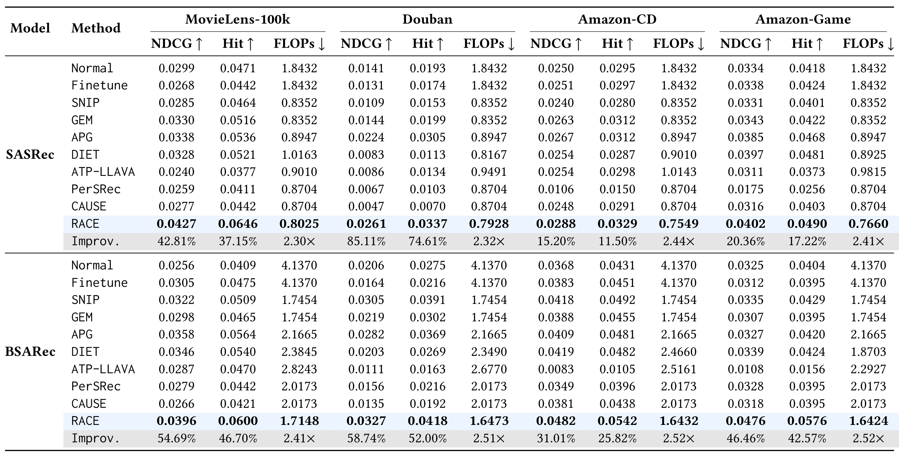
Table 1 将每个数据集分成 NDCG、Hit 和骨干 FLOPs 三列，SASRec 与 BSARec 分上下两块，数值越大对前两项越好，最后一项越小越好。所有 Improv 行的质量增益是对 Normal 行计算，而不是对每列最强压缩基线：例如 Douban 上 SASRec 从零点零一四一升至零点零二六一，得到作者强调的百分之八十五点一一；若比较同列最强竞争方法 APG 的零点零二二四，提升缩为百分之十六点五二。这个分母差异决定了怎样理解摘要中的大幅增益。Amazon-CD 的 BSARec 达零点零四八二，相对 DIET 的零点零四一九提高百分之十五点零四；骨干计算从 Normal 的四点一三七 MFLOPs 降至一点六四三二。表中 RACE 在八组设置下质量都领先，但不是所有竞争方法在压缩以后都更好，例如部分 token 压缩方法明显低于 Normal，说明短历史中错误删除也会损害质量。另一方面，表格只报告点估计，不能仅根据加粗行推断每个小差异都统计显著，尤其 Amazon-Game/SASRec 相对 DIET 的 NDCG 只从零点零三九七增至零点零四零二。后续需要种子配对、同等调参和置信区间，才能判断不同列中的收益稳定性。
原文给出的四数据集平均相对增益，SASRec 的 NDCG 与 Hit 分别约百分之四十点八七和三十五点一二，BSARec 分别约四十七点七三和四十一点七七。骨干 FLOPs 平均压缩倍数为二点三七和二点四九。平均百分比容易放大小基数任务的影响，应该和逐数据集绝对值一并读；这些数字既不是用户级在线收益，也不是多目标业务指标。Finetune 在部分任务不如 Normal，反映有限数据更新未必改善模型，但不能由此断言一切端侧学习都无效，它只描述本文的具体实现、数据量和预算。
3.2 动态预算、通道选择和序列裁剪的组件消融
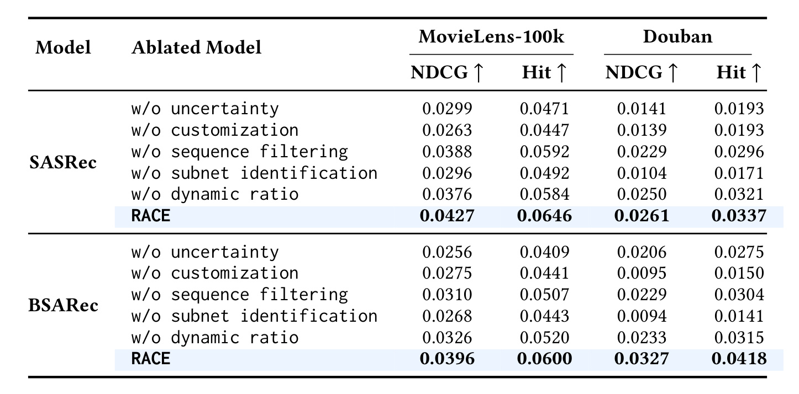
Table 2 用 MovieLens-100k 与 Douban、两个骨干拆解各组件。w/o uncertainty 回到统一骨干，数值与 Normal 一致；w/o customization 仅保留用于估计不确定性的贝叶斯预测层，常常不如原骨干，说明增加不确定性输出本身不是精度提升的来源。只保留子网而取消序列过滤，SASRec 在 MovieLens 上 NDCG 零点零三八八，低于完整零点零四二七但高于零点零二九九基线；只过滤序列而不识别子网，在 Douban/SASRec 仅零点零一零四，甚至低于基线，表明两侧压缩不能彼此替代。固定比例同时做双侧裁剪已经带来很大部分收益，例如 Douban/SASRec 零点零二五零与完整零点零二六一接近；动态预算在这个设置上的额外提升约百分之四点四，远小于完整模型相对原骨干的总提升。Douban/BSARec 从固定比例零点零二三三增至零点零三二七，动态作用更大。因此较准确的结论是组件贡献存在任务和骨干异质性，而不是把所有总收益都归功于排序不确定性。表中缺少对应每个消融的计算量列，仍不能确认所有行在完全相同的实际预算下比较，这是解释机制增益时应保留的边界。
这组消融至少区分出两个层次：个性化筛选及其正则效应，和按实例分配预算的增量。对于已有动态子网的工程系统，真正应参考的是完整版本与固定比例版本之间的差距；若系统此前完全不压缩，则需要同时比较固定压缩和动态压缩的帕累托曲线。只拿最弱消融作为对照，会把模型结构、训练目标、输入处理多个变化混在同一个百分比里。
3.3 不确定性度量和历史重要性的替代选择
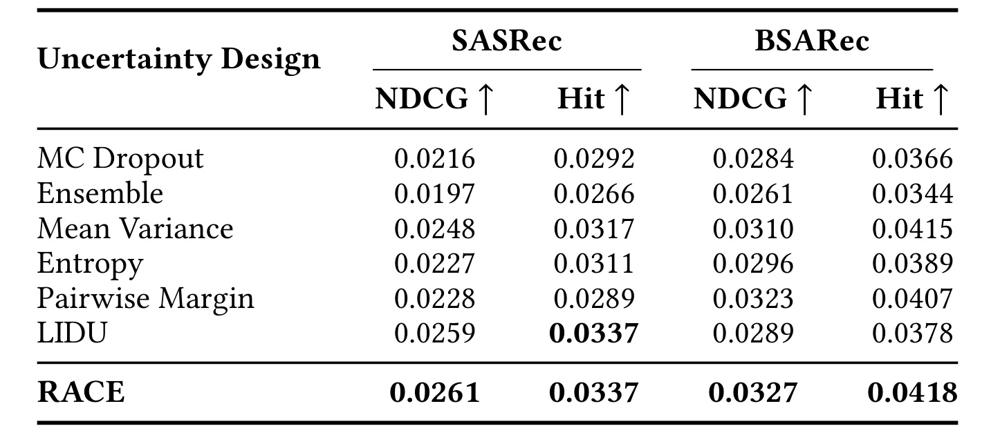
Table 3 在 Douban 比较不确定性链路的两种变化。MC Dropout 与 Ensemble 只作用于预测层，以便尽量控制额外计算；它们不代表任意规模、充分调优的全模型集成上限。RACE 在 SASRec/BSARec 上 NDCG 分别零点零二六一、零点零三二七，高于这两种替代。保持贝叶斯头后，方差均值、熵、成对 margin 和 LIDU 则测试如何把预测分布概括为预算信号，列表聚合大多更好，却存在非常接近的对照：SASRec 的 LIDU 为零点零二五九，Hit 与 RACE 同为零点零三三七；BSARec 的成对 margin 为零点零三二三，与 RACE 相差零点零零零四。因此这张表支持当前设置下的有效设计选择，并不足以证明复杂列表度量在所有场景都有压倒性优势。工程采用前应同时测代理预测开销、样本难度分组、误分配请求比例和真实端到端预算，特别是离线数值差异小的替代项，可能仍因实现更简单而具有竞争力。这里所称计算对齐只限制在预测头层面，仍需核对相同的训练轮数、集成数量及梯度更新量，才能形成严格的算法成本对照。
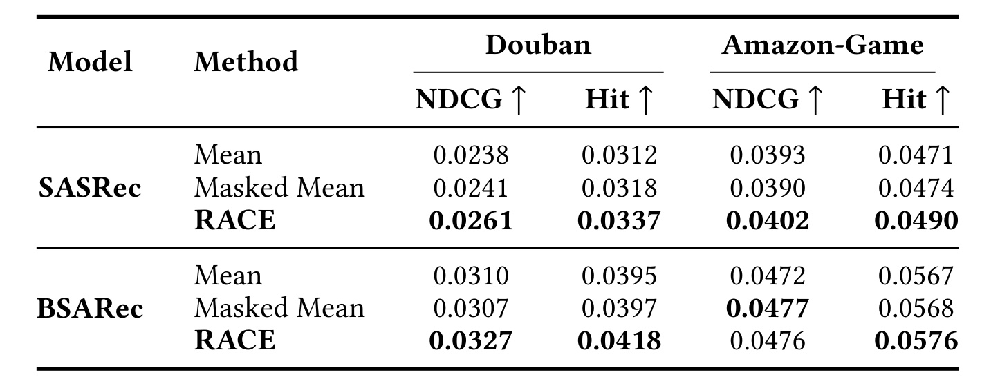
Table 4 固定其他链路后，替换序列过滤的重要性定义，对比直接平均注意力、加入因果掩码的平均注意力和 RACE 累积位置加权。在 Douban/SASRec，NDCG 从普通均值的零点零二三八、掩码均值的零点零二四一上升至零点零二六一，Hit 也同步增加，说明仅平均或仅屏蔽不可见项仍未完全处理推荐历史的位置结构。作者的累积指标在八个报告指标中七个最好，但 Amazon-Game/BSARec 的 NDCG 是明确反例：Masked Mean 零点零四七七，RACE 零点零四七六，虽然后者 Hit 零点零五七六更高。这个反例很小，却很有必要保留，避免把“整体有效”改写为“每项绝对最优”。表格并没有测试极长历史上的乘积数值稳定性，也没有按照远期兴趣、即时兴趣和重复行为分组，因此不能据此确定它偏向近期交互是否会系统性牺牲长期信号。将该机制用于长期用户记忆时，仍需检查被删除的物品是否包含罕见但关键的兴趣线索，尤其不能只用平均命中率掩盖少数用户的明显退化。
3.4 难度分组中的容量分配和五种子训练
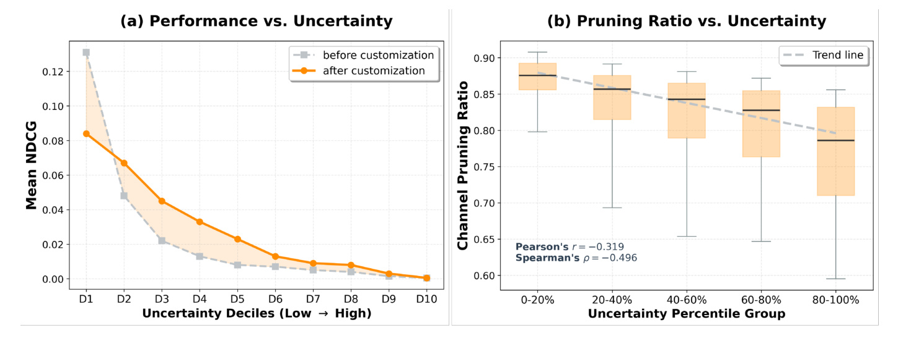
Figure 4 左图在 Amazon-CD/SASRec 上按不确定性划分十分位组，比较定制前灰线与定制后橙线的 NDCG。两者整体随不确定性上升而下降，说明这个指标对模型当前难易具有区分能力；高不确定性组在定制后获益，支持保留更多容量可能帮助难例的解释。右图把样本汇成五个百分位组，箱体是四分位范围，须延伸至十分位和九十分位，展示预测通道剪枝比例。整体下降意味着困难组倾向删得少，简单组倾向删得多，方向与伪标签构造一致。Pearson 相关系数约负零点三一九，Spearman 约负零点四九六，表明分配有可观趋势但远非逐样本完美对应。尤其比例目标本来就由不确定性单调映射训练而来，因此右图并不是独立的因果验证；更关键的是左图质量和同预算对照能否一起改善。图也没有给每个十分位的完整延迟与平均计算量，所以当前只能确认已学到预期分配方向，不能额外保证每个组都位于各自最优的精度成本前沿。
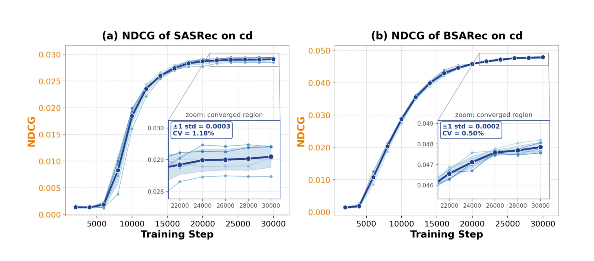
Figure 5 在 Amazon-CD 分别画 SASRec 与 BSARec 的 NDCG 随训练步数变化，浅色带对应五个种子的一个标准差，插图放大收敛区。作者报告收敛区变异系数约百分之一点一八和零点五零，曲线的总体收敛趋势也较一致，因此可以说在该任务的随机初始化变化下没有明显训练崩溃或极大方差。这个证据覆盖的是完整 RACE 的训练稳定性，并不等价于 Table 1 全部方法、全部数据集的成对显著性检验；它也没有测试随机用户抽样、训练时间截断或设备负载扰动。曲线显示早期性能较低而后上升，不能将其中某一步直接当成必须的线上更新频率。若资源预算随时间改变，需要另外检查阈值预测器和骨干表示一起更新后是否出现短期失配，五次独立训练的收敛图并未回答持续训练中的状态切换问题。因而本图适合支持优化稳定性，不适合扩大为对线上长期稳定的承诺。图中的标准差带描述种子间波动，不能解释成在线用户指标的置信区间。
3.5 剪枝比例的敏感性和实际 CPU 延迟
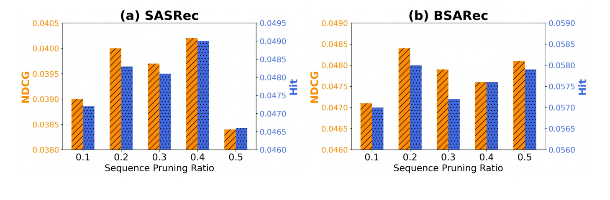
Figure 6 横轴是逐层序列剪枝比例，橙色和蓝色柱分别读取左右两侧的 NDCG 与 Hit 坐标，两个子图对应 SASRec、BSARec。SASRec 在零点四附近取得较好质量，继续增加到零点五时下降；BSARec 在零点二至零点五区间的变化相对温和，最优值也并非所有指标完全重合。因此共享默认零点四是作者在两骨干之间选取的折中，而不是从理论推导出的通用常数。逐层删除比例还会复合：即使某层只删除一部分，后续层面对的序列会越来越短，不能把零点四简单理解成整网最后只减少四成历史。该图没有给每个比例的实际延迟，无法单独确定时间质量最优点；也没有测试长序列和低频用户，不能确保在二十长度下看似冗余的行为到其他任务仍然冗余。复现时应把图的准确率变化与真实计算曲线合起来，按照具体任务允许的质量退化选预算。若预算限制由用户设备温度或后台任务造成，还需要检查比例切换是否引入额外形状重编译开销。
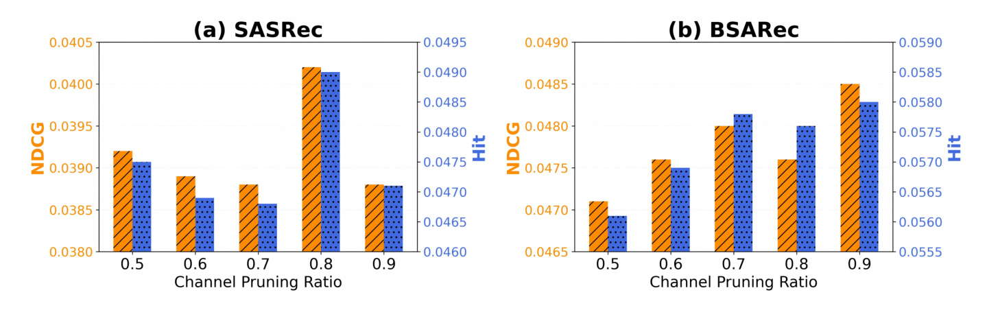
Figure 7 将横轴换成通道剪枝比例，仍然在两个骨干上并排显示 NDCG 与 Hit。SASRec 在零点八附近更好，BSARec 在零点七至零点九的高剪枝区间仍保持较强结果，因此作者用零点八作为共享默认。这个现象说明原本完整的小型骨干也可能有明显冗余，个性化选择和稀疏训练还可能带来正则收益，不能先验假设删通道一定降低精度。但“删除八成 FFN 通道”不等于“整个模型参数、全链路计算或物理内存降低八成”：嵌入、注意力、输出头、重要性计算以及数据搬运仍然存在。图也不能证明通道的顺序和硬件内核能够自动适配每个实例，运行时间还取决于批处理、对齐粒度、缓存和调度成本。把这张质量敏感性图与 Table 5 的实际延迟放在一起读，才能避免从理论掩码比例直接推导过高的吞吐承诺。共享默认有助于展示跨骨干稳定区间，但仍需要对新数据分布重新评估，尤其要同时报告最难样本而非只有平均精度。
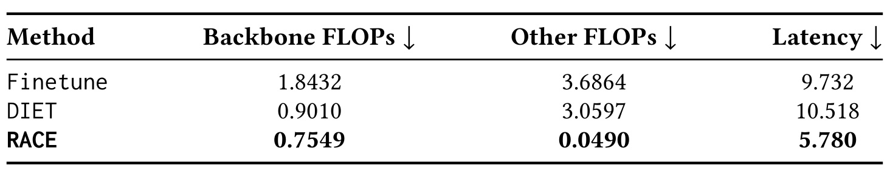
Table 5 的场景是云端预取五十个候选之后，在四核 CPU 上模拟本地重排，比较 SASRec 的 Finetune、DIET 和 RACE。表把骨干与额外成本分列，RACE 分别为零点七五四九和零点零四九零 MFLOPs，延迟五点七八零毫秒；DIET 骨干虽降至零点九零一零，辅助计算却达三点零五九七，最终十点五一八毫秒，比 Finetune 的九点七三二还慢。这是本文最有工程含义的结果之一：只报告压缩后的主模型，会漏掉选择子网、提取用户表示或反向更新的代价。相对 Finetune 和 DIET，RACE 的实测延迟分别降低约百分之四十点六与四十五点零；这些是本表环境的 CPU 单次测量，不是手机功耗、网络全链路或服务器并发吞吐。表中没有延迟分位数、样本量、运行方差和 CPU 型号等完整配置，因此还不能判断尾延迟和多请求批量调度。辅助 FLOPs 的六十二倍或七十五倍减少也不应改写成整体推理同倍加速，它只是对应额外开销一列的比例，和最终毫秒数存在不同分母。
3.6 测试时改变资源约束
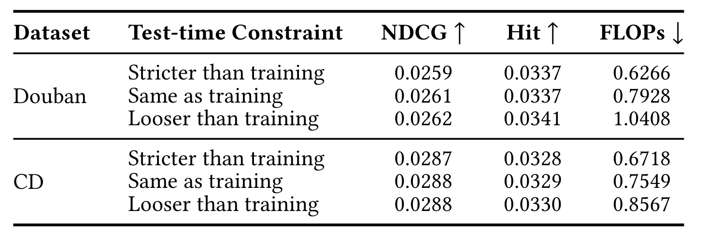
Table 6 在 SASRec 的 Douban 与 CD 上改变测试时约束，而不是重新训练三个独立模型。Douban 从默认零点七九二八 MFLOPs 降至零点六二六六，计算再少约百分之二十一，NDCG 从零点零二六一变为零点零二五九，下降约百分之零点八；CD 从零点七五四九降至零点六七一八，NDCG 从零点零二八八降至零点零二八七。放宽约束后，Douban 的质量略有提升；CD 的 NDCG 在给出的精度下仍同为零点零二八八，只有 Hit 从零点零三二九变为零点零三三零。因此正文“额外预算带来一致的 NDCG 和 Hit 改善”需要加上舍入与指标边界，不能说每一列都肉眼可见上升。这里支持在训练范围附近平滑调节质量成本，但约束强弱具体怎样映射到控制器参数、能否满足硬毫秒预算没有完整展开；表里的 FLOPs 也不能替代真实设备负载下的即时延迟。对于上线，它更像一个可调整的容量接口，仍需控制尾延迟、极端难例和改变约束后的分组质量，而非一条已经验证的动态资源保障协议。
附录 Figure S1 扫描两个损失系数，默认一和零点五在所测设置最好，NDCG 在各自范围最多变化约百分之二点一与六点四；它提醒阈值监督权重并非完全无关紧要。因正文已经说明这一局限，附录曲线未重复截入。总体而言，论文的最强证据是固定公开设置中的离线质量与 CPU 辅助成本联合改善；在线业务效果、真实端设备能耗以及分布漂移中的不确定性校准仍没有验证。
4. 总结
RACE 的贡献是把模型自身对列表顺序的信心变成早期计算控制信号，再同时调整 FFN 容量和历史长度。它值得注意的地方包括：用同一骨干中间状态服务预算与敏感度模块，避免辅助网络抵消压缩收益；把何时多算与具体保留什么拆成两个学习问题；把最终层的不确定性蒸馏到早期预测器，使昂贵的事后测量不必直接进入每次服务。结果也提示，降低计算和改善精度可能同时发生，原因可能包含个性化保留、噪声删除和训练正则，不能仅用“模型更小”概括。
对推荐链路而言，我最愿意保留的是预算接口和成本拆解。若现有端侧或精排系统已经有可复用的早期用户状态，可以先在固定骨干上记录预测不确定性、真实误差及不同保留比例的质量曲线，检验请求之间是否确实存在可以利用的计算异质性。随后比较相同平均预算下的固定比例、按历史长度、按低成本启发式和按预测不确定性几种策略。只有当动态策略在同预算前沿仍有优势，才值得承担控制器、动态形状与子网执行的复杂度；否则一套稳定的固定裁剪可能已经获得大部分收益。
必须保留至少四项局限。第一，历史最多二十，因果注意力累积乘积与连续裁剪尚未经过千级长历史检验，不能直接用作长期用户记忆的结论。第二，贝叶斯头的校准能力在本文任务上的独立校准曲线并不充分，早期伪标签又依赖批内统计，分布漂移时可能把低置信噪声当成值得增加计算的复杂度。第三，主实验质量全量排序而效率只测五十候选重排，候选集合差异会改变分数分布及其排序不确定性，需要在同一业务接口上联测。第四，部分表格只给点估计，五种子图的覆盖也局限于一个数据集，许多细小增益缺乏配对置信区间。第五，四核 CPU 没有提供完整尾延迟与功耗证据，不规则通道和 token 形状到 GPU 或手机 NPU 上未必复现相同速度收益。
后续应优先跟进三个具体问题。其一，核验独立实现与完整调参配置，特别是贝叶斯推荐损失、序列比例的线性映射、soft mask 和 hard drop 的位置处理，确保论文描述足以还原同一个算法。其二，在更长历史和兴趣突变用户上做质量预算曲线，报告原始历史、被删行为的年龄分布与低频兴趣保留率，以区分去噪收益和重要信息被删的风险。其三，在目标设备上联合测候选生成、控制器、骨干和输出，至少包含中位与高分位延迟、峰值内存和能耗，同时验证难度分组是否因为设备负载变化而失效。这些验证比直接把论文平均 FLOPs 倍数写入容量规划更有价值。
这篇工作和生成式推荐的连接，目前主要来自资源分配思想。作者在结尾提出让不确定性指导生成式解码深度或 beam 扩张，但正文没有相应实验，因此应作为未来方向记录。对于现有固定候选序列模型，本文已给出完整可讨论的机制与公开离线证据；对线上多目标排序和生成式召回，它仍是值得验证的设计假设。技术迁移时应保留这条证据边界，同时保留 Table 5 提供的务实提醒：真正决定是否值得采用的，是质量与全部成本一起变化的结果。